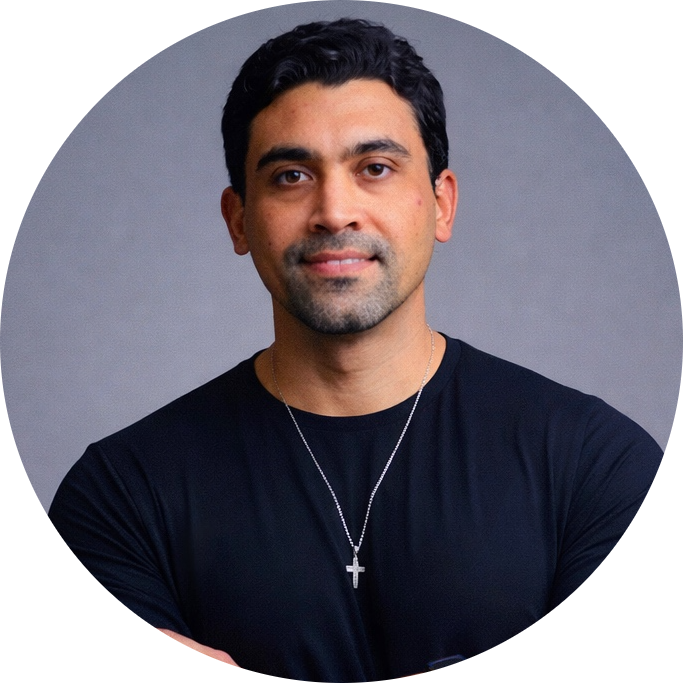

· · Mentoria 1:1 · 8 semanas · Rafael Lima · Fortaleza / Remoto
Um programa individual que parte do diagnóstico real da SUA rotina — não de template genérico — para ter IA aplicada em pontos críticos do seu trabalho, mensurável.
Agenda limitada · Próximas vagas a confirmar
Clique nos pontos que parecem com você. Se você chegou até aqui, provavelmente já tentou — e travou.
pontos identificados — o diagnóstico já começou.
Se algum desses soa familiar: o problema não é você. Não é comprometimento. Não é capacidade técnica.
É a ausência de diagnóstico. Ferramenta sem método vira brinquedo.
A maioria dos cursos começa com a ferramenta. Este programa começa com você.
Todo gestor que trava com IA tem o mesmo problema: tentou aplicar uma solução genérica numa rotina específica. O Método 5D parte do diagnóstico real do seu papel — dados, tecnologia, pessoas, processos e governança — antes de construir qualquer solução.
Aprendi IA sendo PMO — sem background técnico, cometendo os mesmos erros que você cometeria. Isso não é humildade de marketing. É por que esse programa funciona para gestor não-técnico.
Rafael Lima · PM · Professor IEL-CE · Co-fundador BumpAI
Não existe script de sessões fixas. O ciclo se adapta ao seu ritmo — mas o entregável de cada momento é sempre claro.
Diagnóstico + Mapeamento
Mapeamos sua rotina em 5 dimensões (dados, tecnologia, pessoas, processos, governança) e priorizamos oportunidades com scorecard VIP. Resultado: mapa real do seu ponto de partida e os movimentos que valem seu tempo.
Por quê: sem diagnóstico real, você vai resolver o problema errado com a ferramenta certa.
Primeira construção
Com o mapa na mão, já começamos a construir. GPT customizado, prompts encadeados ou fluxo n8n — o formato depende do contexto. Você vê o raciocínio, não recebe pronto.
Por quê: solução que você não entendeu é solução que você abandona em 3 semanas.
Construir → Implantar → Refinar
A partir daí é ciclo: constrói, usa no trabalho real, traz o resultado para a sessão seguinte, ajusta e avança. Você já tem coisas funcionando antes de fechar as primeiras horas do programa.
Por quê: resultado prático no processo é o que mantém a motivação — não promessa de resultado futuro.
Medir e avançar
Fechamos o Relatório de Adoção com dados reais (pré vs. pós), consolidamos as Diretrizes de Uso Responsável e planejamos as próximas oportunidades — para você continuar sozinho com método.
Por quê: resultado sem métrica é história. Você sai com número para mostrar — e sistema para continuar.
PM não-técnico que aprendeu IA na prática — e transformou isso em método replicável.

Rafael Lima
PM · Consultor de IA · Professor IEL-CE · Co-fundador BumpAI · Fortaleza, BR
Não sou desenvolvedor. Sou Engenheiro pela UFC que virou Product Manager, PMO de CoE de RPA e gestor de portfólio — e aprendeu IA generativa inteiramente na prática, sem background técnico. Cometi os erros que os tutoriais não ensinam a evitar. Esse é exatamente o meu diferencial.
Em 10 anos na interseção entre gestão, produto e tecnologia, gerei impacto mensurável: +R$ 5M em receita, +2.300h/ano economizadas em automação de processos, e redução de 1.300 horas mensais na jornada de venda da Bemol Digital — com IA e microsserviços. Hoje aplico a mesma lógica como PM na iRede e no BumpAI, empresa de automação para PMEs que co-fundo.
Como Professor de IA Generativa no IEL-CE e consultor da Collaborative, já capacitei +600 profissionais em gestão com IA — de coordenadores a diretores, de PMEs a grandes empresas. Visitei a sede da NVIDIA Brasil e participei do AWS Summit SP 2025: não para colecionar evento, mas porque preciso estar dentro do campo para ensinar o que está funcionando agora.
Co-construídos sessão a sessão. Não é kit pronto — é o que VOCÊ produziu durante o programa.
| # | Entrega |
|---|---|
| 01 | Diagnóstico 5D — mapa real do seu ponto de partida Análise do seu papel em 5 dimensões: dados (o que você gera e consome), tecnologia (o que já usa), pessoas (quem depende de você), processos (o que é repetitivo e custoso) e governança (o que pode ou não pode entrar na IA). Resultado: um mapa escrito do que você consegue e não consegue fazer com IA hoje — com os gaps priorizados. De "acho que tenho potencial com IA" para "sei exatamente onde e por quê". |
| 02 | Mapa de Oportunidades com scorecard VIP Toda oportunidade de IA da sua rotina avaliada por 3 critérios: Valor (quanto impacta na prática), Implementabilidade (quanto esforço exige) e Prontidão (você tem as condições para executar agora). O Mapa é "vivo" — cresce com você ao longo das sessões. De "tudo pode ser automatizado" para "isso aqui vale, aquilo ali espera". |
| 03 | Plano dos Próximos 30 Dias 3 movimentos concretos: cada um com input claro (o que você precisa fazer), ferramenta definida (qual IA ou automação), métrica simples (como vai saber que funcionou) e marco de revisão (quando verificar). Fechado na sessão 4 com dados do diagnóstico real — não com suposição. De "vou tentar usar mais IA" para "segunda-feira faço isso, com esse prompt, nessa ferramenta". |
| 04 | Solução de IA funcionando na sua rotina Construída nas sessões 5 e 6 — você vê o raciocínio, não recebe pronto. O formato depende do seu contexto: GPT customizado com instruções específicas do seu papel, conjunto de 3–5 prompts encadeados para processo recorrente, ou fluxo n8n automatizando tarefa repetitiva. Você aprende a replicar a lógica — não só o resultado. De "no demo funciona, no meu dia trava" para "construí eu mesmo, sei onde mexer". |
| 05 | Diretrizes Pessoais de Uso Responsável 1 página operacional com 4 blocos: dados sensíveis (o que nunca entra na IA), validação humana (o que precisa de revisão antes de sair), voz autoral (como manter sua identidade no output da IA) e citação e transparência (quando e como declarar uso de IA). Serve para você e para orientar sua equipe. De "improviso com dado da empresa" para "tenho política clara antes de mandar qualquer coisa". |
| 06 | Relatório de Adoção Pré/Pós com métricas reais Comparação objetiva entre seu ponto de partida (sessão 1) e o estado final (sessão 8): horas economizadas por semana, tarefas que saíram da sua rotina, novos workflows que entraram, qualidade percebida dos outputs. O Relatório usa as 5 tarefas-baseline definidas no Diagnóstico — números que você pode mostrar para o seu gestor. De "acho que melhorou" para "economizei X horas/semana, aqui está a evidência". |
| 07 | Biblioteca Pessoal de Prompts e Skills Tudo que você construiu durante o programa, organizado para usar autonomamente: prompts testados nos seus casos reais, estruturas de instrução para seus GPTs, checkpoints de validação de output, e as notas de raciocínio de cada decisão — para você poder adaptar, não só copiar. De "dependo de tutorial para cada coisa nova" para "tenho um sistema que eu mesmo consigo expandir". |
| + | Bônus · Incluso no programa Check-in 30 dias pós-programa Sessão de até 2h, 30 dias após o programa, para revisitar o Plano dos 30 Dias com dados reais de uso. O que funcionou, o que ajustar, o que vem a seguir. Nos 30 dias de intervalo, suporte assíncrono via WhatsApp — dúvidas respondidas em até 24h em dias úteis. O acompanhamento não termina na última sessão. Termina quando o resultado está consolidado. |
| + | Bônus · Incluso no programa Cofre Vivo — segundo cérebro com Claude Code Obsidian configurado do zero com Claude Code: sistema de notas, memória de trabalho e organização de prompts prontos para usar. Na sessão Rafael mostra o dele no detalhe — como usa no dia a dia, o que funciona, o que ajustou. Avulso: R$ 197. De "anoto em vários lugares e perco" para "tenho um sistema que pensa junto comigo". |
| + | Bônus · Incluso no programa Kit de Copilotos de IA Templates de assistentes especializados prontos para adaptar: copilotos de gestão, análise, comunicação e processos. Podem virar Skills no Claude, GPTs personalizados ou assistentes Gemini — dependendo do que você usa. De "começo do zero toda vez" para "pego o template, adapto ao meu contexto e uso". |
| + | Bônus · Incluso no programa Acervo de Cursos e Prompts Material completo dos treinamentos de IA Generativa para Negócios: slides, prompts testados com centenas de profissionais, exercícios práticos e biblioteca de casos reais de uso em gestão. De "conteúdo genérico que não encaixa na rotina" para "material que veio de quem aplicou antes de ensinar". |
Leia com atenção. Não faz sentido vender para quem não vai se beneficiar — prefiro 5 clientes com resultado a 20 sem.
É para você se...
Não é para você se...
"Não estou tentando convencer você. Estou tentando garantir que, se entrar, vai sair com resultado."
O modelo de pagamento não é uma política comercial. É como eu demonstro que tenho pele no jogo.
| O que está incluído no programa | |
|---|---|
| ✓ | Diagnóstico 5D personalizado da sua rotina |
| ✓ | Mapa de Oportunidades com scorecard VIP |
| ✓ | Plano dos Próximos 30 Dias estruturado e fechado |
| ✓ | Sessões de construção lado a lado |
| ✓ | Diretrizes Pessoais de Uso Responsável |
| ✓ | Relatório de Adoção pré/pós com métricas reais |
| ✓ | Biblioteca Pessoal de Prompts e Skills co-criada |
| + | Bônus · InclusoCheck-in 30 dias — até 2h de sessão + suporte assíncrono via WhatsApp durante os 30 dias |
| + | Bônus · InclusoCofre Vivo — segundo cérebro configurado com Obsidian + Claude Code |
| + | Bônus · InclusoKit de Copilotos de IA — templates de assistentes prontos para adaptar |
| + | Bônus · InclusoAcervo de Cursos e Prompts — material dos treinamentos de IA para Negócios |
Investimento pelo programa completo
R$4.000
16 horas de trabalho 1:1 estruturado com metodologia, entregáveis e acompanhamento.
Equivale a 4 consultas de especialista + 1 curso personalizado + sistema de gestão da mudança.
Skin in the Game · Garantia natural
O pagamento em 2 parcelas não é só praticidade. É o modelo de garantia do programa: se ao fim da sessão 4 a mentoria não estiver entregando o que combinamos, você simplesmente não paga o restante.
Sem fricção. Sem julgamento subjetivo. Sem cláusula difícil. Eu só ganho completamente se você ganhar primeiro.
Agenda limitada · Atendimento em Fortaleza (presencial ou remoto) e 100% remoto para outras cidades
Dúvidas antes de decidir? É só mandar mensagem — a conversa é honesta.
As perguntas que aparecem mais — respondidas com honestidade.
A maioria dos gestores vai continuar usando IA da mesma forma: testando aqui, vendo tutorial ali, tentando aplicar sozinho. Alguns vão avançar. A maioria vai continuar no mesmo lugar daqui a 6 meses.
Este programa é para quem decidiu que tentativa-e-erro não é mais suficiente. Que quer método, entregáveis reais, e um resultado que possa mostrar.
"Em 8 semanas você passa de tento usar IA para tenho IA rodando na minha rotina — e sei medir."
Rafael LimaSe você chegou até aqui e ainda tem dúvida, é provável que a dúvida seja sobre o momento — não sobre o programa. Me chama. A gente conversa honesto.